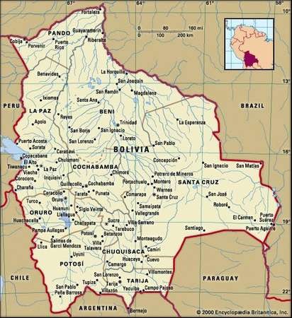

Located in the center of South America, Bolivia is sometimes referred as the Heart of South America. It is often misconcepted as an Andian only culture stereotiping it with highlands, llamas, dry potato, coca leaves. "A Peru-like culture" like ignorance sometimes would say and nothing else.
Although its true that it has beautiful dry valleys around and within the montain chains of Los Andes its mostly jungles having part of the Amazonian Forest to the north and east of the country, and even a small desert with huge dunes that it looks to be out of place. Also, very fertile lands in the center of the country up to the outskirts of the mountains in the center-west all the way to the south. Bolivia posses a very diverse geography and ecosystem.
Because of these, the variety of food is broad from entry plates like soups to main dishes that consists of diferent meats even aligator with many sauces, eggs, chips, plantains to be served with. Plus, the passion expressed throught our music will get your senses. If you ever come to this beautiful country, don't just visit our Andian culture, and have a look, taste and hear part of the big rest that it offers to you like the Cruceño Culture to the East and Sucrense Culture to the South